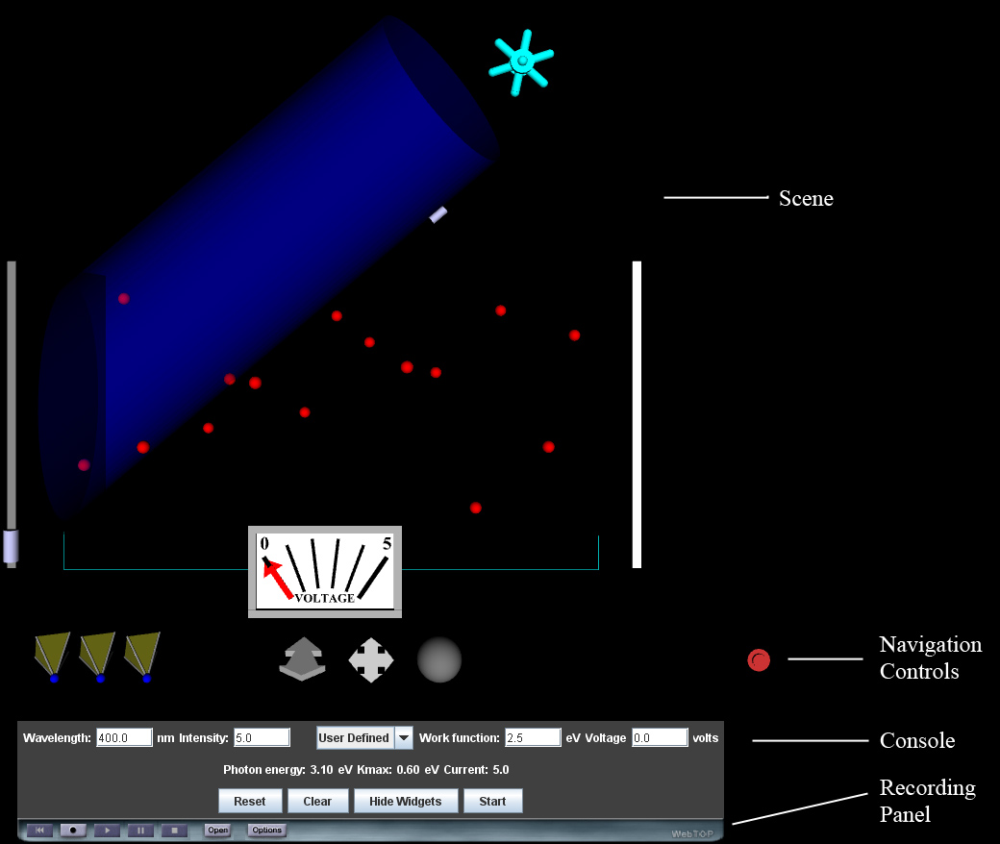

Photoelectric Effect: Directions
The default view for the WebTOP window looks like the following:

The WebTOP window has four parts. The top portion is the active WebTOP Scene.
The second portion is the X3D Navigation Controls, which allow you to manipulate
the scene. The third portion is the Console, which allows you to the change
parameter values used in the simulation. The fourth portion is the Recording
Panel, which allows you to record and replay WebTOP sessions. You may scroll
down to read on, or select the appropriate link from the following items:
How To Change Parameters
The parameters that can be changed are: (a) the wavelength of the incident
light, (b) the intensity of the incident light, (c) the work function of the
cathode (i.e. the metal plate on the left), and (d) the voltage across the two
plates.
Changing the Wavelength of the Incident Light
The wavelength can be changed either by typing the desired value into the
Wavelength number box, or by using the cursor to spin the wheel widget that is
above the cone of light. The allowed range of wavelength values is 200 to 700 nm.
Changing the Intensity of the Incident Light
The intensity can be changed either by typing the desired value into
the Intensity number box, or by using the cursor to slide the silver-colored
cylindrical widget attached to the cone of light. The allowed range of intensity
values is 0 to 10 (arbitrary units).
Changing the Work Function of the Metal
There are two different modes for changing the value of the work function:
(a) the “User Defined” mode and (b) the “Select an Element” mode.
(a) The default mode is “User Defined.” In this mode the user can change the
value of the work function either by typing the desired value into the Work
Function number box, or by using the cursor to slide the silver-colored cylindrical
widget attached to the side of the cathode. The allowed range of work function
values is 2.00 eV to 6.00 eV.
(b) To select an element, go to the pull down menu in the center of the console
and choose the type of metal that you would like the cathode to be made of. The
correct value of the work function for that metal is then loaded into the Work
Function number box. This value cannot be changed, unless the user chooses the
User Defined option in the pull down menu.
Changing the Voltage Across the Plates
The voltage across the plates can be changed either by typing the desired
value into the Voltage number box, or by using the cursor to move the red arrow
widget in the voltage meter that is in the scene. The allowed range of voltage
values is 0 to 5 volts.
Using the Controls
The Reset button resets all the parameters to their default values.
The Clear button clears out all the photoelectrons that are currently being
displayed. The Hide Widgets/Show Widgets button hides or shows the widgets
in the scene. The Start/Stop button starts or stops the motions of the photoelectrons.
Back to Top
|